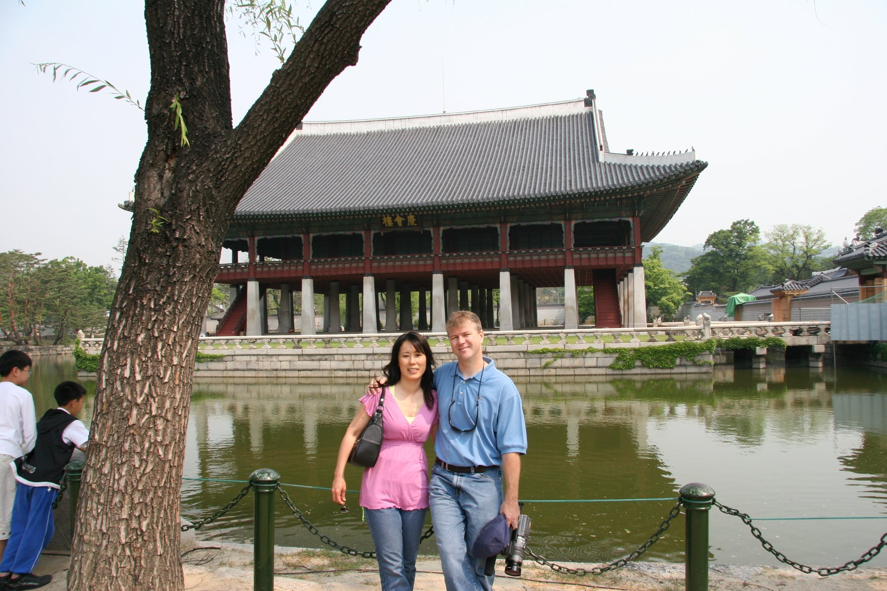

Seoul & beyond · South Korea
Korea,
2005.
Palace courtyards, bright lanterns, bustling markets, and the little moments in between. Thirty-three memories from our trip.
Explore the album ↓
Gyeongbokgung Palace, Seoul · May 26, 2005
The collection
Five days, many memories.